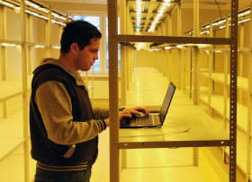
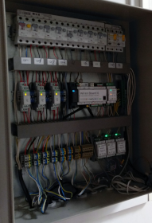
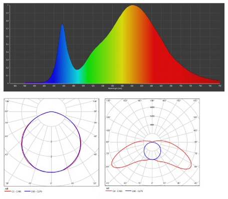
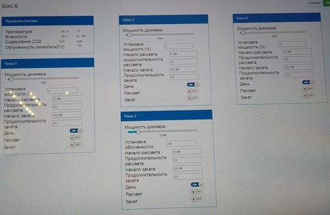
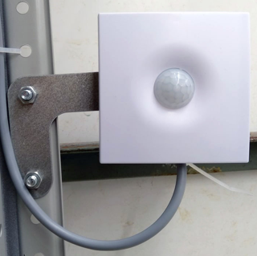
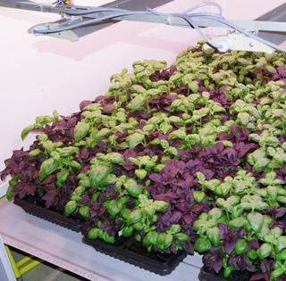
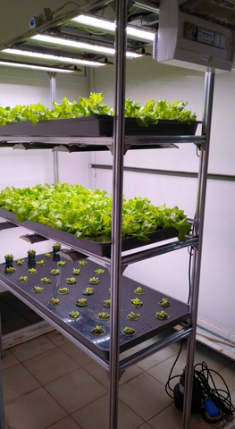
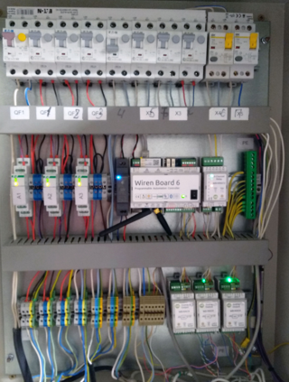
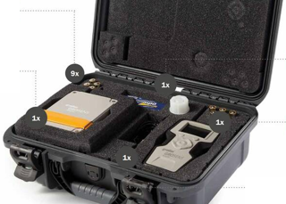

Сельское хозяйство – инерционная отрасль, в которой новые технологии приживаются долго. Кажется, что автоматизация может увеличить урожайность и повысить производительность труда. Но как это работает на самом деле?
Меня пригласили в биотехнологический комплекс РУП "Институт овощеводства" под Минском, где выращивают салат, базилик, лук, перец, огурцы, голубику и картофель, и где реализовано несколько проектов автоматизации. Моим гидом был Александр из LedFarm.by, отвечавший за светодиодное освещение.
Надеюсь, этот небольшой обзор будет полезен читателям, которые задумываются о своей «умной теплице» или домашней гидропонике.
Сразу оговорюсь: промышленное выращивание растений – многостадийный этап. Но сегодня я расскажу только про площадку для микроклонального размножения. При микроклональном размножении из образцов неполовым путем получаются саженцы, аналогичные исходному. В результате посадочный материал получается генетически однородным и может обладать дополнительной устойчивостью к болезням.
Правильный микроклимат
Чтобы собирать хороший урожай, надо обеспечить правильный микроклимат. В первую очередь, это режим освещения и полива. Дальше идут контроль температуры, влажности и CO₂. Обычно агроном по графику обходит теплицу или стеллажную систему, сверяет показания датчиков с целевыми, управляет вентиляцией, поливом и т.д.
В этом методе есть очевидные проблемы: редкая периодичность обхода вместе с человеческим фактором. Например, если сотрудник забыл выключить полив, это может привести к снижению урожайности или даже полной потере.
Чтобы избежать таких ситуаций, внедряют автоматику: от простого мониторинга с сигнализацией на рабочем месте оператора теплицы до полной автоматизации процессов.

На данной площадке была поставлена задача мониторинга всех важных параметров и автоматизации полива и освещения, так как они существенно влияют на урожайность. За остальными параметрами оператор будет следить удалённо и принимать меры, если значения вышли за рамки допустимых.
Задача не кажется слишком сложной, но при реализации появляются нюансы:
В итоге всё-таки выбрали ПЛК, но с Linux и веб-интерфейсом – контроллер Wiren Board 6.

Контроллер и модули ввода/вывода в щитке
Контроллер выбран, что дальше? Первым шагом была автоматизация освещения.
В освещении стеллажных систем и теплиц есть разница. В теплицы солнечный свет проникает, поэтому днем имеет смысл учитывать естественную освещенность, чтобы снижать яркость ламп и энергопотребление. Но конкретно эта система планировалась как стеллажная. Она будет полностью закрыта от солнечного света, поэтому здесь достаточно простых сценариев включения ламп по расписанию.
После консультации с агрономом был выбран сценарий, соответствующий естественному солнечному циклу:
Но длительность этапов и требуемая мощность отличаются для разных культур.
Освещение – профиль Александра. Он установил светильники LED FARM 80 с высокой эффективностью спектра освещения и хорошим светораспределением по всей области стандартной стеллажной системы.

Сценарий солнечного освещения планировали реализовать на Home Assistant или OpenHAB. Но в итоге с помощью техподдержки Wiren Board всё написали на встроенном JavaScript-подобном движке правил. После этого начали тесты на стеллажных системах.

Панель управления контроллером
Выбранные светильники управляются через вход 0-10 В. Для управления ими сначала выбрали модуль, который не мог увести напряжение точно в 0, и минимальная светимость оставалась. Но потом мы выбрали модуль WB-MAO4 с ШИМ, и проблема полного отключения исчезла.
После этого была ещё одна проблема. Сначала систему тестировали в теплице, куда поступал и естественный свет. Использовался универсальный датчик освещения, влажности и CO₂, освещенность с которого поступала в нашу модель, и при определённых условиях запускала цикл досветки. Когда мы перенесли систему в закрытое помещение, естественный рассвет не наступал, и включения светильников не происходило. В итоге, пришлось дорабатывать модель.

В итоге для стеллажных систем было принято решение отвязаться от датчика освещенности. Но сам датчик теперь используется для контроля: по нему следят за облученностью и СО₂, выводят эти показатели на экран агронома, а также заносят в память контроллера. Оттуда их можно посмотреть в виде графика или скачать журнал на компьютер.
Кстати, интересный нюанс. Чем больше растение, тем больше ему надо света. Если маленькие саженцы посадить на итоговые места, много света будет уходить мимо растений. Поэтому для повышения эффективности агрономы делят систему на участки с разной плотностью растений. И по мере роста пересаживают растения, увеличивая расстояние между ними.

В рассадном отделении растения расположены вплотную друг к другу.
Во взрослом отделении расстояние между ними будет увеличено.

Демонстрационная установка, на которой показываются возможности автоматизации.
На данный момент выращивается салат, но потом основными культурами станут картофель и голубика

Автоматизация полива
Следующий этап – автоматизация полива. Полив должен осуществляться не только днём, но и ночью по установленному времени, которое определяет агроном. В среднем оптимальный режим для растений – 10-15 поливов в сутки, то есть раз в несколько часов длительностью несколько минут. Время полива может меняться в зависимости от влажности и насыщенности почвы.
Сделать полив по расписанию просто. Достаточно в нужное время замыкать контакт модуля реле, который включает насос. И через заданное время полива размыкать.
Следующая итерация – мониторинг влажности почвы и полив при определённых параметрах. Были закуплены китайские датчики почвы с определением содержания солей (на внутреннем рынке таких датчиков нет). Но пришло немного не то, что заказывали: вместо датчиков с выходом RS-485 пришли устройства с выходом 0-10 В.
Мы смогли подключить их через адаптер. Но когда начали сравнивать их показания с контрольным прибором Grodan, оказалось, что датчики давали сильную погрешность. В итоге их не получилось откалибровать, и мы решили отказаться от привязки полива к ним из-за низкого качества измерений.
Сказался и ещё один фактор. При использовании проточной гидропоники агроному требуется периодически менять питательный раствор, а для этого нужно снимать крышку лотка вместе со всеми растениями. А датчик непросто заметить среди растений, и несколько раз про него просто забывали.
В итоге агроном на одном цикле промерял влажность почвы с помощью Grodan, и зафиксировал сценарий полива. Условно в программе есть 25 ячеек, в которых можно задать время начала полива и продолжительность. Этого оказалось более чем достаточно для всех сценариев.
Дашборд автоматизированного стеллажа в мобильном браузере

Демонстрационная установка, на которой показываются возможности автоматизации и гидропоники

Прибор Grodan
Заключение
В этом примере получилось достаточно быстро реализовать базовую автоматизацию: освещение и полив, плюс отправку других параметров на панель оператора. Этого достаточно для небольших стеллажных систем. Плюс это недорого: цена оборудования для автоматизации составляет всего 5% от цены базового оснащения стеллажей.
Но эту же систему можно применять и в больших теплицах. Там её функционал можно расширить. Например, если установлены системы подачи углекислого газа, показания с датчика СО₂ можно использовать, чтобы поддерживать оптимальную концентрацию. А если подключить контроллер к системам отопления, кондиционирования и вентиляции, можно более тонко регулировать микроклимат.